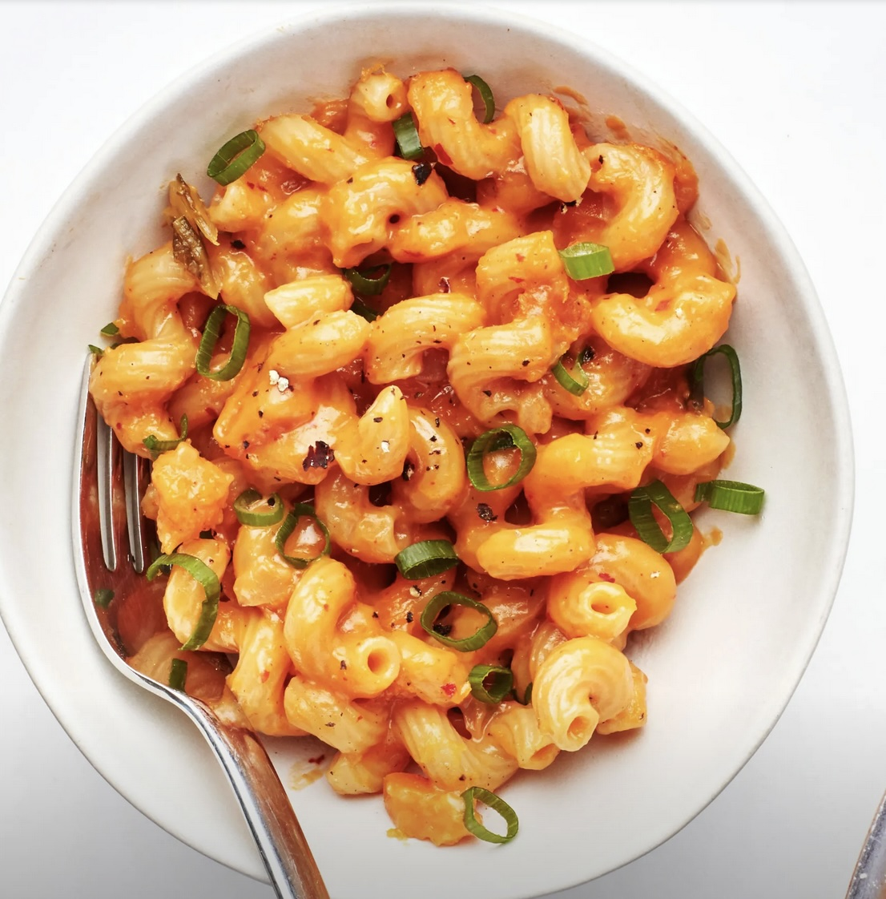

Bon Appetit's One-Pot Kimchi and Squash Mac and Cheese

Description:
I cooked this super-gooey and spicy macaroni and cheese from Bon Appetit for myself during a lonely peak-pandemic Thanksgiving, and it made my day 10000x better.
Beware: it's rich and makes a ton, so if it's just you, or you and a partner/roommate, you'll probably have lots of leftovers.
(In this case, not a bad thing!)
Yield: 4 to 6 servings
Ingredients
- 1/2 small butternut squash (about 1 1/4 pounds)
- 1 onion
- 1 garlic clove
- 1 cup Napa cabbage kimchi
- 2 tablespoons extra-virgin olive oil
- 1 pound elbow macaroni, shells, cavatappi, rigatoni, or other short pasta
- 4 cups vegetable broth or water
- 1 teaspoon Diamond Crystal or 1/2 teaspoon Morton kosher salt (optional)
- 1 pound sharp cheddar
- 4 scallions
- Freshly ground black pepper
Steps
- Peel squash and cut flesh into 1/2" cubes. Peel and finely chop onion.
Using the flat side of your knife, crush garlic clove, then peel and finely chop. Coarsely chop kimchi.
(Some kimchi juice is okay; no need to drain.)
- Heat olive oil in a large Dutch oven or other heavy pot over medium-high. Add onion and cook,
stirring often, until softened slightly, about 2 minutes. Add garlic and kimchi and cook until
kimchi is starting to brown and stick to bottom of pot, about 5 minutes.
- Add squash to pot and reduce heat to medium. Cover and cook, stirring halfway through,
until squash is tender (a paring knife should pierce it easily), 6-8 minutes.
- Remove lid and stir in pasta, along with vegetable stock or water. If using water,
add salt. Cover and bring to a simmer; cook until pasta is al dente and most of the stock is absorbed (you want some starchy liquid left
in pan), 6-8 minutes.
- Meanwhile, grate sharp cheddar on large holes of a box grater. Trim and finely slice scallions.
- Reduce heat to low and add cheese to pot; stir until cheese is melted and gooey, about 2 minutes.
Season mac and cheese with a few grinds of freshly ground black pepper and scatter scallions over.